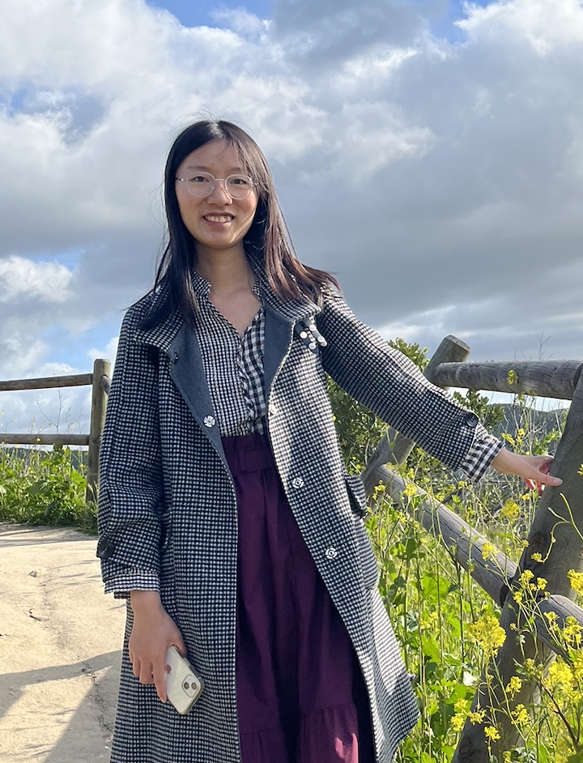

I am a Quantum Postdoctoral Fellow at the Simons Institute for the Theory of Computing at UC Berkeley, hosted by Umesh Vazirani. I got my PhD from Caltech in 2025, where I was fortunate to be advised by Thomas Vidick, Urmila Mahadev, and John Preskill. I participated in the 2025 EECS Rising Stars workshop at MIT.
I am broadly interested in quantum algorithms and quantum complexity, especially in understanding potential quantum advantage for solving problems in quantum many-body systems, like estimating ground energy and preparing ground states / Gibbs states. Understanding quantum many-body systems is central to quantum chemistry and condensed matter physics, with examples including the electronic structure problem and the 2D Hubbard model. From a computer science perspective, problems on ground states and thermal states are quantum analogues of the energy minimization and classical Gibbs sampling, which play a fundamental role in complexity and algorithm design.
Feel free to contact me if you happen to be interested in similar questions, or just want to say hello :)
I develop quantum algorithms for preparing Gibbs states and estimating their properties, with the goal of making quantum thermal-state simulation more efficient.
[QIP 2025 Contributed Talk], [Arxiv:2406.16023]
I study concrete many-body systems to identify physically relevant problems where quantum computers may offer an advantage. Recently I have been working on quantum impurity models, a key building block of dynamical mean-field theory (DMFT) for studying interacting electrons.
I also develop classical algorithms and complexity results to understand when quantum many-body problems are classically tractable.
[QIP 2026 Contributed Talk], [Arxiv:2505.09730]
[QIP 2025 Contributed Talk], [STOC 2025], [Arxiv:2410.05414]
[QIP 2024 Contributed Talk], [Accepted by PRX Quantum], [Arxiv:2309.10155]